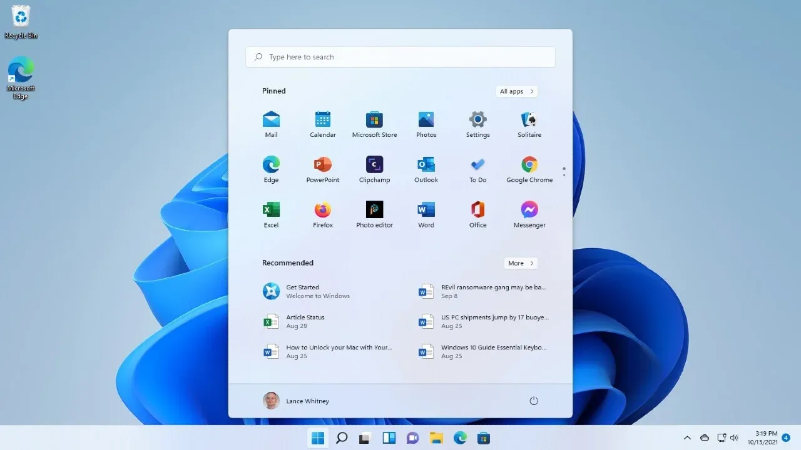
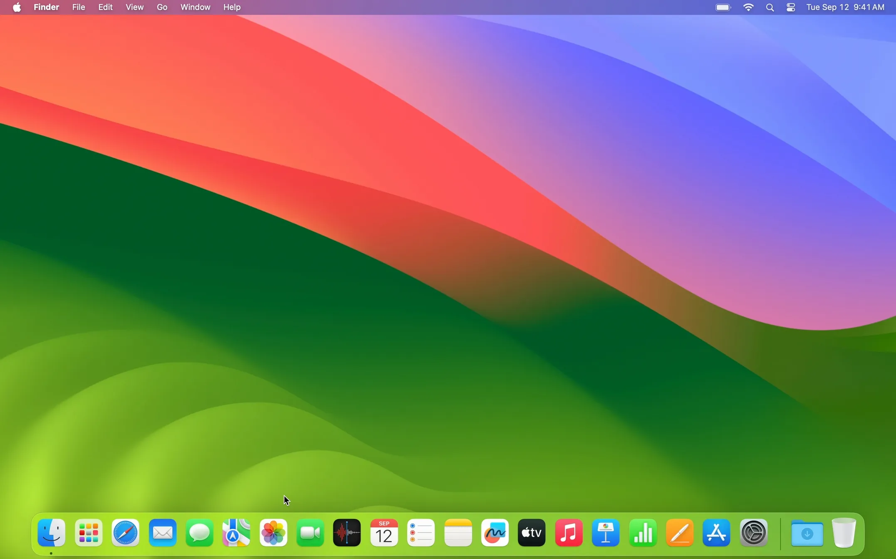

Both: Strong multitasking capabilities.
Mac and Windows both handle multitasking well, letting you run multiple apps smoothly, switch between tasks quickly, and organize your workspace with features like Mission Control (Mac) or Task View (Windows). Whether you’re managing emails, editing documents, or streaming music while working, both systems provide efficient tools to keep your workflow organized and productive.
Both: Excellent display and graphics options.
Macs are known for their sharp Retina displays, while many Windows PCs offer high-refresh-rate screens, 4K resolution, and advanced graphics options. Whether you’re editing photos, watching movies, or gaming, both platforms deliver crisp visuals and vibrant colors—though they cater to slightly different user preferences and needs.
 Both: Regular software updates and improvements.
Both macOS and Windows receive frequent updates that bring new features, security fixes, and performance improvements. Apple pushes macOS updates yearly with major upgrades, while Microsoft provides ongoing updates through Windows Update. This ensures users on both platforms stay up to date with the latest tools, protections, and enhancements.
Interesting Fact: Both Mac and Windows can run virtual machines of each other.
Using software like Parallels on Mac or VMware on Windows, you can create virtual machines (VMs) that let you run the other operating system inside your current one. For example, you can run Windows on a Mac without rebooting, or test macOS features inside Windows (with some technical workarounds). This is popular among developers, testers, and advanced users who need access to both ecosystems on a single machine.